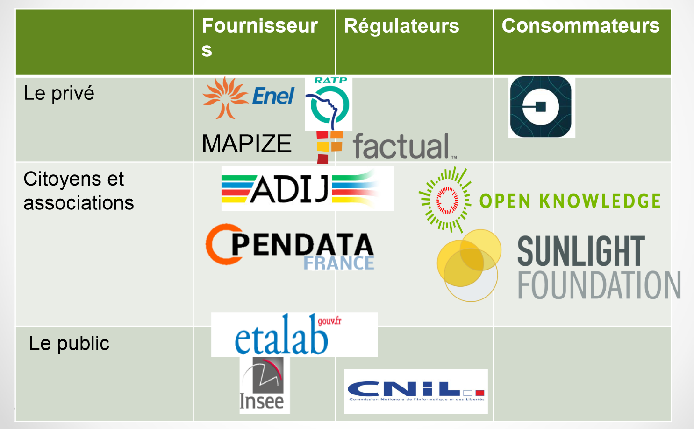

Carte des acteurs
INCLURE ICI TEXTE INTRODUCTIF POUR LA CARTE DES ACTEURS
Acteurs majoritaires
Open Knowledge Foundation
Le groupe local Open Knowledge Foundation est structuré autour d’une association dont l’objectif est la promotion, l’accès, la diffusion, le partage et la réutilisation du savoir libre sous toutes ses formes.
Open Data Soft
OpenDataSoft est une société française proposant une solution Open Data complète : publication - visualisation - partage - réutilisation des données.
Etalab
La politique d’ouverture et de partage des données publiques (« Open data ») est pilotée, sous l’autorité du Premier ministre, par la mission Etalab, dirigée par Mme Laure Lucchesi.
Open Data France
Créée en 2013, cette association a pour objectifs de regrouper et de soutenir les collectivités territoriales françaises et les entreprises dans leur démarche d'ouverture de leurs données.
Version tableau (provisoire)
-
Arbre des débats
Mapping de notre controverse En savoir plus ...
-
Carte des acteurs
Organisations activessur l'Open DataEn savoir plus ...
-
Frise chrono-logique
Dates marquantes dans l'Open DataEn savoir plus ...
-
Définitions
Mots clés del'Open DataEn savoir plus ...